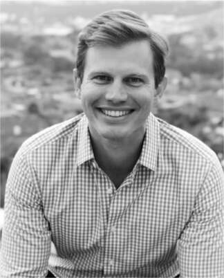
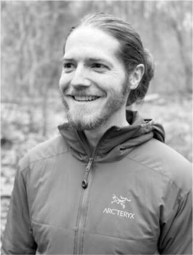
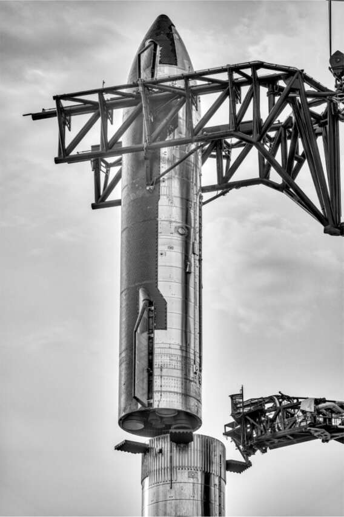

Mechazilla
X, khi đó mới mười lăm tháng tuổi, đang tập đi trên chiếc bàn hội nghị màu trắng của Starbase ở Boca Chica, dang rộng và khép hai tay lại. Cậu bé đang bắt chước hình ảnh động trên màn hình hiển thị cánh tay của tháp bệ phóng Boca Chica. Ba từ đầu tiên cậu học nói là "tên lửa", "ô tô" và "bố". Giờ đây, cậu bé đang luyện tập một từ mới: "đũa". Cha cậu bé ít chú ý, và năm kỹ sư khác trong phòng tối hôm đó đã quen với việc giả vờ như không bị cậu bé làm phân tâm.
Câu chuyện về đôi đũa bắt đầu từ tám tháng trước, vào cuối năm 2020, khi nhóm SpaceX đang thảo luận về chân đế dự kiến cho Starship. Nguyên tắc chỉ đạo của Musk là khả năng tái sử dụng nhanh chóng, điều mà ông thường tuyên bố là "chìa khóa để đưa loài người trở thành một nền văn minh du hành vũ trụ". Nói cách khác, tên lửa nên giống như máy bay. Chúng nên cất cánh, hạ cánh và sau đó cất cánh lại càng sớm càng tốt.
Falcon 9 đã trở thành tên lửa tái sử dụng nhanh chóng duy nhất trên thế giới. Trong năm 2020, các tên lửa đẩy Falcon đã hạ cánh an toàn hai mươi ba lần, hạ cánh thẳng đứng trên chân đế. Cảnh quay video về những lần hạ cánh bốc lửa nhưng nhẹ nhàng vẫn khiến Musk bật dậy khỏi ghế. Tuy nhiên, ông không hài lòng với chân đế đang được lên kế hoạch cho tên lửa đẩy của Starship. Chúng làm tăng trọng lượng, do đó làm giảm kích thước tải trọng mà tên lửa đẩy có thể nâng.
"Tại sao chúng ta không thử dùng tháp để bắt nó?" ông hỏi. Ông đang đề cập đến tòa tháp giữ tên lửa trên bệ phóng. Musk đã nảy ra ý tưởng sử dụng tòa tháp đó để lắp ráp tên lửa; nó có một bộ cánh tay có thể nhấc tên lửa đẩy tầng một, đặt nó lên bệ phóng, sau đó nhấc tàu vũ trụ tầng hai và đặt nó lên trên tên lửa đẩy. Giờ đây, ông đề xuất rằng những cánh tay này cũng có thể được sử dụng để bắt tên lửa đẩy khi nó trở lại Trái Đất.
Đó là một ý tưởng táo bạo, và căn phòng tràn ngập sự lo lắng. “Nếu tầng đẩy quay trở lại bệ phóng và va vào nó, thì sẽ mất rất nhiều thời gian để phóng tên lửa tiếp theo,” Bill Riley nói. “Nhưng chúng tôi đã đồng ý nghiên cứu các phương án khác nhau để thực hiện điều này.”
Vài tuần sau, ngay sau Giáng sinh năm 2020, nhóm đã tập hợp để lên ý tưởng. Hầu hết các kỹ sư đều phản đối việc cố gắng sử dụng bệ phóng để đón tầng đẩy. Các cánh tay lắp ráp vốn đã rất phức tạp và nguy hiểm. Sau hơn một giờ tranh luận, mọi người dần đồng thuận với ý tưởng cũ là lắp chân hạ cánh cho tầng đẩy. Nhưng Stephen Harlow, giám đốc kỹ thuật phương tiện, vẫn kiên trì với phương án táo bạo hơn. “Chúng ta đã có bệ phóng này rồi, tại sao không thử sử dụng nó?”
Sau một giờ tranh luận nữa, Musk lên tiếng. “Harlow, anh ủng hộ kế hoạch này,” ông nói. “Vậy tại sao anh không phụ trách nó?”
Ngay khi đưa ra quyết định, Musk chuyển sang chế độ hài hước ngớ ngẩn. Ông bắt đầu cười về cảnh trong phim The Karate Kid, nơi sư phụ karate, ông Miyagi, dùng đũa để bắt ruồi. Musk nói, các cánh tay của bệ phóng sẽ được gọi là đũa, và ông đặt tên cho toàn bộ bệ phóng là “Mechazilla”. Ông ăn mừng bằng một dòng tweet: “Chúng tôi sẽ cố gắng bắt tầng đẩy bằng cánh tay của bệ phóng!” Khi được một người theo dõi hỏi tại sao không sử dụng chân hạ cánh, Musk trả lời: “Chân chắc chắn sẽ hoạt động, nhưng điều tuyệt vời nhất là không có bộ phận nào cả.”
Vào một buổi chiều thứ Tư nóng nực cuối tháng 7 năm 2021, phân đoạn cuối cùng của Mechazilla với các cánh tay đũa di động đã được lắp đặt tại bãi phóng Boca Chica. Khi nhóm của ông cho ông xem một đoạn phim hoạt hình về thiết bị này, Musk rất phấn khích. “Tuyệt vời!” ông hét lên. “Lượt xem cái này sẽ rất khủng.” Ông tìm thấy một đoạn clip dài hai phút từ The Karate Kid và đăng nó lên Twitter từ iPhone của mình. “SpaceX sẽ cố gắng bắt vật thể bay lớn nhất từ trước đến nay bằng đũa robot,” ông nói. “Thành công không được đảm bảo, nhưng sự phấn khích thì có!”
Sự bùng nổ
“Chúng ta cần lắp tàu lên tầng đẩy,” Musk nói với cuộc họp ngẫu hứng của một trăm công nhân tập trung thành hình bán nguyệt trong một trong ba lều giống nhà chứa máy bay ở Boca Chica. Đó là một ngày nắng gắt tháng 7 năm 2021, và ông đang tập trung vào việc xin FAA phê duyệt cho Starship bay. Cách tốt nhất, ông quyết định, là lắp tầng đẩy và tàu vũ trụ tầng hai lên bệ phóng để chứng minh rằng chúng đã sẵn sàng. “Điều đó sẽ buộc các cơ quan quản lý phải hành động,” ông nói. “Sẽ có áp lực dư luận buộc họ phải phê duyệt.”
Đó là một động thái hơi vô nghĩa nhưng điển hình của Musk. Starship, hóa ra, sẽ không sẵn sàng bay cho đến tháng 4 năm 2023, tức là 21 tháng nữa. Nhưng việc tạo ra cảm giác cấp bách đến điên cuồng, ông hy vọng, sẽ thắp lên ngọn lửa dưới tất cả mọi người, bao gồm cả các cơ quan quản lý, công nhân, và cả chính ông.
Trong vài giờ tiếp theo, ông đi dọc theo dây chuyền lắp ráp, hai cánh tay trần của ông đung đưa, cổ hơi cúi, thỉnh thoảng dừng lại để nhìn chằm chằm vào một thứ gì đó trong im lặng. Khuôn mặt ông ngày càng tối sầm lại, và những khoảng dừng của ông mang một cảm giác đáng ngại. Đến 9 giờ tối, trăng tròn đã mọc lên từ đại dương, và dường như nó đang biến ông thành một người bị ám ảnh.
Tôi đã từng chứng kiến Musk rơi vào trạng thái “ma quỷ” này trước đây, nên tôi biết điều gì sắp xảy ra. Như thường lệ - ít nhất hai hoặc ba lần một năm với quy mô lớn - một sự thôi thúc đang dâng trào trong anh, buộc anh phải ra lệnh cho một đợt tăng tốc, một đợt hoạt động hết công suất suốt ngày đêm, giống như anh đã làm tại nhà máy pin Nevada, nhà máy lắp ráp ô tô Fremont, và văn phòng đội xe tự lái, và sau này sẽ làm trong tháng điên cuồng sau khi mua lại Twitter. Mục tiêu là để xáo trộn mọi thứ và "tống khứ những thứ vớ vẩn ra khỏi hệ thống", như cách anh ấy nói.
Cơn bão trong đầu anh bùng nổ khi anh và một nhóm quản lý cấp cao đi xuống bãi phóng và không thấy ai làm việc. Điều này có vẻ không bất thường đối với hầu hết mọi người vào đêm thứ Sáu muộn, nhưng Musk đã nổi giận. Mục tiêu tức thì của anh là một kỹ sư xây dựng cao lớn, hiền lành tên là Andy Krebs, người phụ trách xây dựng cơ sở hạ tầng tại Starbase. "Sao không có ai làm việc?", Musk gặng hỏi.
Không may cho Krebs, đây là lần đầu tiên trong ba tuần anh không có ca đêm làm việc trên tháp và bãi phóng. Nói năng nhỏ nhẹ với một chút nói lắp, anh ngập ngừng trả lời, điều này càng khiến tình hình tồi tệ hơn. "Vấn đề chết tiệt là gì?", Musk quát. "Tôi muốn thấy mọi người làm việc."
Đó là lúc anh ra lệnh tăng tốc. Anh nói rằng tầng đẩy và tầng hai của Starship cần được đưa ra khỏi khu sản xuất và lắp ráp trên bệ phóng trong vòng mười ngày. Anh muốn năm trăm công nhân từ khắp SpaceX—Cape Canaveral, Los Angeles, Seattle—được đưa ngay lập tức đến Boca Chica và tham gia vào công việc. "Đây không phải là một tổ chức tình nguyện", anh nói. "Chúng ta không bán bánh quy của Nữ Hướng đạo sinh. Đưa họ đến đây ngay bây giờ." Khi anh gọi cho Gwynne Shotwell, đang ngủ ở Los Angeles, để tìm hiểu xem những công nhân và giám sát viên nào sẽ đến Boca Chica, cô phản đối rằng các kỹ sư ở Cape vẫn còn các vụ phóng Falcon 9 cần chuẩn bị. Musk ra lệnh hoãn chúng lại. Việc tăng tốc là ưu tiên hàng đầu của anh.
Hơn 1 giờ sáng một chút, Musk gửi một email có tiêu đề "Tăng tốc Starship" cho tất cả nhân viên SpaceX. "Bất kỳ ai không làm việc trong các dự án quan trọng khác tại SpaceX nên chuyển ngay sang làm việc trên quỹ đạo Starship đầu tiên", anh viết. "Hãy bay, lái xe hoặc đến đây bằng bất kỳ phương tiện nào có thể."
Tại Cape Canaveral, Kiko Dontchev, người đã chứng tỏ năng lực khi Musk nổi cơn thịnh nộ tương tự sau khi thấy gần như không có ai làm việc trên Pad 39A một đêm, bắt đầu gọi những công nhân giỏi nhất của mình bay đến Texas. Trợ lý của Musk, Jehn Balajadia, đã cố gắng đặt phòng khách sạn ở Brownsville gần đó, nhưng hầu hết đều đã được đặt cho một hội nghị kiểm soát biên giới, vì vậy cô phải vội vàng sắp xếp cho công nhân ngủ trên nệm hơi. Sam Patel làm việc suốt đêm để tìm ra cấu trúc báo cáo và giám sát mà họ sẽ áp dụng—và cả cách để có đủ thức ăn đến Boca Chica để nuôi tất cả mọi người.
Khi Musk trở về từ bãi phóng đến tòa nhà chính của Starbase, màn hình video bên cạnh cửa trước đã được lập trình lại. Nó hiển thị, "Lắp ráp Tàu+Tên lửa T -196h 44m 23s", và đang đếm ngược từng giây. Balajadia giải thích rằng Musk không cho phép họ làm tròn thành ngày hoặc thậm chí là giờ. Mỗi giây đều quý giá. "Chúng ta cần đến Sao Hỏa trước khi tôi chết", anh nói. "Không có động lực nào đưa chúng ta đến Sao Hỏa ngoài chính chúng ta, và đôi khi điều đó có nghĩa là tôi."
Việc lắp ráp đã thành công. Chỉ trong hơn mười ngày, tên lửa đẩy và tàu vũ trụ Starship đã được đặt trên bệ phóng. Tuy nhiên, việc này cũng có phần vô nghĩa. Tên lửa vẫn chưa thể bay, và việc lắp ráp nó cũng không thúc ép được FAA phê duyệt nhanh hơn. Nhưng cuộc khủng hoảng giả tạo này đã thúc đẩy đội ngũ duy trì tinh thần thép, và nó mang lại cho Musk một chút kịch tính mà anh ta khao khát. "Tôi cảm thấy niềm tin vào tương lai của nhân loại được khôi phục", anh nói tối hôm đó. Một cơn bão nữa đã qua.
Chi phí động cơ Raptor
Vài tuần sau cuộc lắp ráp, Musk chuyển sự chú ý sang Raptor, động cơ sẽ cung cấp năng lượng cho Starship. Sử dụng nhiên liệu metan lỏng siêu lạnh và oxy lỏng, nó có lực đẩy gấp đôi động cơ Merlin của Falcon 9. Điều này đồng nghĩa Starship sẽ có lực đẩy lớn hơn bất kỳ tên lửa nào trong lịch sử.
Nhưng động cơ Raptor sẽ không đưa loài người lên sao Hỏa chỉ bằng sức mạnh. Nó cũng phải được sản xuất hàng loạt với chi phí hợp lý. Mỗi Starship cần khoảng bốn mươi động cơ, và Musk hình dung một hạm đội gồm hàng chục Starship. Raptor quá phức tạp để sản xuất hàng loạt. Nó trông giống như một bụi cây mì spaghetti. Vì vậy, vào tháng 8 năm 2021, Musk đã sa thải người phụ trách thiết kế và tự mình đảm nhận chức vụ phó chủ tịch phụ trách động cơ đẩy. Mục tiêu của anh là giảm chi phí của mỗi động cơ xuống còn khoảng 200.000 đô la, bằng một phần mười so với chi phí lúc đó.
Gwynne Shotwell và giám đốc tài chính SpaceX, Bret Johnsen, đã sắp xếp một cuộc họp nhỏ vào một buổi chiều với người phụ trách giám sát chi phí Raptor trong bộ phận tài chính. Một nhà phân tích tài chính trẻ tuổi trông có vẻ chăm chỉ tên là Lucas Hughes bước vào, vẻ ngoài hơi chỉnh tề của anh được giảm bớt bởi mái tóc buộc túm. Anh chưa bao giờ trực tiếp tương tác với Musk và thậm chí không chắc Musk biết tên mình. Vì vậy, anh ấy lo lắng.
Musk bắt đầu bài giảng về tinh thần đồng đội. "Tôi muốn nói rõ", anh bắt đầu. "Anh không phải là bạn của các kỹ sư. Anh là người đánh giá. Nếu anh được lòng các kỹ sư, đó là điều không tốt. Nếu anh không dám phê bình, tôi sẽ sa thải anh. Rõ chưa?" Hughes hơi lắp bắp khi đồng ý.
Kể từ khi trở về từ Nga và tính toán chi phí chế tạo tên lửa của riêng mình, Musk đã áp dụng cái mà ông gọi là "chỉ số ngốc". Đó là tỷ lệ giữa tổng chi phí của một bộ phận với chi phí nguyên liệu thô của nó. Một thứ có chỉ số ngốc cao - chẳng hạn, một bộ phận có giá 1.000 đô la trong khi nhôm cấu tạo nên nó chỉ có giá 100 đô la - có thể có thiết kế quá phức tạp hoặc quy trình sản xuất quá kém hiệu quả. Như Musk đã nói, "Nếu tỷ lệ cao, bạn là đồ ngốc."
"Những bộ phận nào trong Raptor tốt nhất theo chỉ số ngốc?", Musk hỏi.
"Tôi không chắc", Hughes trả lời. "Tôi sẽ tìm hiểu." Điều này không tốt. Khuôn mặt Musk cứng lại, và Shotwell liếc nhìn tôi với vẻ lo lắng.
"Tốt hơn hết là sau này anh nên nắm rõ những điều này trong đầu", Musk nói. "Nếu anh đến một cuộc họp mà không biết những bộ phận nào ngốc nghếch, thì đơn từ chức của anh sẽ được chấp nhận ngay lập tức." Anh nói đều đều và không biểu lộ cảm xúc. "Sao anh lại không biết những bộ phận tốt nhất và tệ nhất là gì?"
"Tôi biết biểu đồ chi phí đến từng bộ phận nhỏ nhất", Hughes nói nhỏ. "Tôi chỉ không biết chi phí nguyên liệu thô của những bộ phận đó."
"Năm bộ phận tệ nhất là gì?", Musk hỏi dồn. Hughes nhìn vào máy tính để xem liệu anh ta có thể tính toán câu trả lời hay không. "KHÔNG! Đừng nhìn vào màn hình", Musk nói. "Chỉ cần nêu một cái. Anh nên biết những bộ phận có vấn đề."
“Cái áo khoác nửa vòi phun đó,” Hughes ngập ngừng đề nghị. “Tôi nghĩ nó có giá mười ba nghìn đô la.”
“Nó được làm từ một miếng thép duy nhất,” Musk nói, giờ đang hỏi dò anh ta. “Vật liệu đó giá bao nhiêu?”
“Tôi nghĩ khoảng vài nghìn đô la?” Hughes trả lời.
Musk biết câu trả lời. “Không. Nó chỉ là thép. Nó khoảng hai trăm đô la. Anh đã thất bại thảm hại. Nếu anh không cải thiện, đơn từ chức của anh sẽ được chấp nhận. Cuộc họp này kết thúc. Xong.”
Khi Hughes bước vào phòng họp vào ngày hôm sau để trình bày tiếp theo, Musk không hề có dấu hiệu nhớ rằng mình đã mắng anh ta. “Chúng ta đang xem xét hai mươi bộ phận ‘chỉ số ngốc nghếch’ tệ nhất,” Hughes bắt đầu khi anh kéo một slide lên. “Chắc chắn có một số chủ đề.” Ngoài việc vặn bút chì, anh ta đã che giấu được sự lo lắng của mình. Musk lặng lẽ lắng nghe và gật đầu. “Chủ yếu là các bộ phận yêu cầu gia công độ chính xác cao, chẳng hạn như máy bơm và vỏ,” Hughes tiếp tục. “Chúng ta cần cắt giảm càng nhiều gia công càng tốt.” Musk bắt đầu mỉm cười. Đây là một trong những chủ đề của ông. Ông hỏi một vài câu hỏi cụ thể về việc sử dụng đồng và cách tốt nhất để dập và đục lỗ. Nó không còn là một bài kiểm tra hay một cuộc đối đầu nữa. Musk quan tâm đến việc tìm ra câu trả lời.
“Chúng tôi đang xem xét một số kỹ thuật mà các nhà sản xuất ô tô sử dụng để giảm chi phí này,” Hughes tiếp tục. Anh cũng có một slide cho thấy cách họ áp dụng thuật toán của Musk cho từng bộ phận. Có các cột hiển thị những yêu cầu nào đã được đặt câu hỏi, những bộ phận nào đã bị xóa và tên của người phụ trách cụ thể cho từng bộ phận.
“Chúng ta nên yêu cầu mỗi người xem họ có thể giảm chi phí bộ phận của mình xuống tám mươi phần trăm hay không,” Musk đề nghị, “và nếu họ không thể, chúng ta nên cân nhắc yêu cầu họ từ bỏ vị trí nếu người khác có thể làm được.”
Đến cuối cuộc họp, họ đã có một lộ trình để giảm chi phí của mỗi động cơ từ 2 triệu đô la xuống 200.000 đô la trong mười hai tháng.
Sau những cuộc họp này, tôi kéo Shotwell sang một bên và hỏi đánh giá của cô ấy về cách Musk đối xử với Hughes. Cô ấy quan tâm đến khía cạnh con người mà Musk phớt lờ. Cô ấy hạ giọng. “Tôi nghe nói Lucas đã mất đứa con đầu lòng khoảng bảy tuần trước,” cô ấy nói. “Anh ấy và vợ anh ấy đã có một đứa con gặp vấn đề khi sinh ra và không bao giờ có thể rời khỏi bệnh viện.” Đó là lý do tại sao, cô ấy cảm thấy, Hughes đã bối rối và ít chuẩn bị hơn bình thường. Cho rằng Musk đã có một trải nghiệm tương tự khi đứa con đầu lòng của ông qua đời, khiến ông đau buồn hàng tháng trời, tôi gợi ý với Shotwell rằng ông ấy nên có thể đồng cảm. “Tôi vẫn cần nói với Elon,” cô ấy nói.
Tôi đã không đề cập đến điều này với Musk khi tôi nói chuyện với ông ấy sau đó vào ngày hôm đó, bởi vì Shotwell nói với tôi rằng đó là bí mật, nhưng tôi đã hỏi ông ấy liệu ông ấy có nghĩ rằng ông ấy quá khắc nghiệt với Hughes hay không. Musk nhìn chằm chằm một cách trống rỗng, như thể ông không chắc tôi đang đề cập đến điều gì. Sau một hồi im lặng, ông trả lời một cách trừu tượng. “Tôi đưa ra phản hồi thẳng thắn, hầu hết là chính xác, và tôi cố gắng không làm điều đó theo cách công kích cá nhân,” ông nói. “Tôi cố gắng chỉ trích hành động, chứ không phải con người. Tất cả chúng ta đều mắc sai lầm. Điều quan trọng là liệu một người có vòng phản hồi tốt, có thể tìm kiếm lời phê bình từ người khác và có thể cải thiện hay không. Vật lý không quan tâm đến cảm xúc bị tổn thương. Nó quan tâm đến việc bạn có chế tạo đúng tên lửa hay không.”
Bài học của Lucas
Một năm sau, tôi quyết định xem điều gì đã xảy ra với hai người mà Musk đã mắng vào mùa hè năm 2021, Lucas Hughes và Andy Krebs.
Hughes vẫn nhớ như in từng khoảnh khắc. “Ông ấy cứ liên tục hỏi tôi về chi phí của nửa vỏ động cơ Raptor,” anh nói. “Ông ấy nói đúng về giá vật liệu, nhưng lúc đó tôi không thể nào giải thích được các chi phí khác một cách rõ ràng.” Khi Musk liên tục ngắt lời, Hughes nhớ lại những bài học từ thời anh tập thể dục dụng cụ.
Anh lớn lên ở Golden, Colorado, với niềm đam mê thể dục dụng cụ. Từ năm tám tuổi, anh bắt đầu tập luyện ba mươi giờ một tuần. Thể dục dụng cụ đã giúp anh học tập tốt hơn. “Tôi rất tỉ mỉ, cầu toàn, tận tâm và kỷ luật,” anh chia sẻ. Tại Stanford, anh tham gia cả sáu bài tập thể dục dụng cụ nam, đòi hỏi phải tập luyện quanh năm, đồng thời theo học chuyên ngành kỹ thuật và tài chính. Môn học yêu thích của anh là Xây dựng Tương lai với Vật liệu Kỹ thuật. Tốt nghiệp năm 2010, anh làm việc tại Goldman Sachs, nhưng luôn khao khát được làm công việc gần gũi hơn với kỹ thuật thực tế. “Tôi là một người mê không gian từ nhỏ,” anh nói, vì vậy anh đã nộp đơn khi thấy SpaceX đăng tuyển vị trí phân tích tài chính. Anh bắt đầu làm việc ở đó vào tháng 12 năm 2013.
“Khi Elon thực sự mắng tôi, tôi đã cố gắng hết sức để giữ bình tĩnh,” anh nói. “Thể dục dụng cụ dạy bạn giữ bình tĩnh trong tình huống áp lực cao. Tôi chỉ cố gắng giữ vững tinh thần và không gục ngã.”
Sau cuộc họp thứ hai, khi đã nắm được tất cả dữ liệu “chỉ số ngốc nghếch”, anh không còn gặp vấn đề gì với Musk nữa. Khi có câu hỏi về chi phí trong các cuộc họp về Raptor sau đó, Musk thường hỏi ý kiến của Hughes, gọi tên anh. Musk có bao giờ thừa nhận đã mắng anh không? “Đó là một câu hỏi hay,” Hughes nói. “Tôi không biết. Tôi không biết liệu ông ấy có suy nghĩ về những cuộc họp đó hay nhớ chúng không. Tôi chỉ biết rằng, sau đó, ít nhất ông ấy cũng biết tên tôi.”
Tôi hỏi, liệu anh có bị phân tâm trong cuộc họp đầu tiên vì cái chết của con gái nhỏ không? Anh im lặng một lúc, có lẽ ngạc nhiên vì tôi biết chuyện này, rồi yêu cầu tôi đừng đề cập đến nó trong sách. Nhưng một tuần sau, anh ấy gửi email, “Sau khi nói chuyện với vợ, chúng tôi đồng ý để anh chia sẻ câu chuyện.” Mặc dù Musk tin rằng mọi phản hồi nên khách quan, nhưng đôi khi mọi thứ lại rất riêng tư. Shotwell hiểu điều đó. “Gwynne thực sự quan tâm đến mọi người, và tôi nghĩ đó là một vai trò quan trọng của cô ấy trong công ty,” Hughes nói. “Elon cũng quan tâm đến nhân loại, nhưng theo một nghĩa vĩ mô hơn.”
Là người đã dành mười hai năm tập trung vào thể dục dụng cụ, Hughes đánh giá cao tư duy toàn tâm toàn ý của Musk. “Ông ấy sẵn sàng dồn hết tâm huyết cho sứ mệnh của mình, và đó là điều ông ấy mong đợi được đáp lại,” anh nói. “Điều đó có mặt tốt và mặt xấu. Bạn chắc chắn nhận ra rằng mình là một công cụ được sử dụng để đạt được mục tiêu lớn hơn, và điều đó thật tuyệt. Nhưng đôi khi, công cụ bị mòn và ông ấy cảm thấy có thể thay thế nó.” Thật vậy, như ông đã thể hiện khi mua Twitter, Musk thực sự nghĩ như vậy. Ông cho rằng khi mọi người muốn ưu tiên sự thoải mái và giải trí của họ thì họ nên rời đi.
Đó là điều Hughes đã làm vào tháng 5 năm 2022. “Làm việc cho Elon là một trong những điều thú vị nhất bạn có thể làm, nhưng nó không cho phép bạn có thời gian cho nhiều thứ khác trong cuộc sống,” anh nói. “Đôi khi đó là một sự đánh đổi lớn. Nếu Raptor trở thành động cơ có giá cả phải chăng nhất từng được tạo ra và đưa chúng ta lên sao Hỏa, thì những thiệt hại đi kèm có thể xứng đáng. Đó là điều tôi đã tin tưởng trong hơn tám năm. Nhưng bây giờ, đặc biệt là sau cái chết của con gái chúng tôi, đã đến lúc tôi phải tập trung vào những điều khác trong cuộc sống.”
Bài học của Andy
Andy Krebs ban đầu cũng chọn cách nhẫn nhịn. Giống như Hughes, anh nói năng nhỏ nhẹ, tính tình ôn hòa, có lúm đồng tiền và nụ cười tươi. Anh không thoải mái như Mark Juncosa và Kiko Dontchev khi trở thành mục tiêu trong những cuộc tranh luận của Musk. Trong một cuộc họp trước đó, khi cả nhóm đang thảo luận xem ai sẽ trình bày dữ liệu không mấy khả quan về rò rỉ khí metan, Krebs nói rằng anh sẽ vắng mặt. Ngay lập tức, Juncosa bắt đầu vỗ cánh tay và giả tiếng gà gáy. Tuy nhiên, Krebs được Juncosa và những người khác ở Starbase yêu mến. Họ cho rằng anh đã xử lý tốt khi Musk chỉ trích anh trong sự cố ở bệ phóng, nguyên nhân dẫn đến giai đoạn làm việc căng thẳng.
Musk thường lặp lại lời nói trong các cuộc họp. Một phần là để nhấn mạnh, một phần chỉ là sự lặp đi lặp lại như một câu thần chú. Krebs nhận ra rằng một cách để trấn an Musk là nhắc lại những gì ông nói. "Ông ấy muốn biết bạn đã lắng nghe," Krebs nói. "Vì vậy, tôi học cách lặp lại phản hồi của ông ấy. Nếu ông ấy nói các bức tường nên được sơn màu vàng, tôi sẽ nói, 'Tôi hiểu ý ông, phương án này chưa hiệu quả, chúng tôi sẽ sơn tường màu vàng'."
Phương pháp này đã hiệu quả vào đêm hôm đó trên bệ phóng. Mặc dù đôi khi Musk dường như không để ý đến phản ứng của mọi người, nhưng ông ấy có thể giỏi trong việc xác định ai có thể xử lý các tình huống khó khăn. "Tôi thực sự nghĩ Krebs khá tỉnh táo khi anh ấy mắc lỗi," Musk nói. "Vòng phản hồi của anh ấy tốt. Tôi có thể làm việc với những người có vòng phản hồi phê bình tốt."
Kết quả là, vào khoảng nửa đêm thứ Sáu, vài tuần sau giai đoạn làm việc căng thẳng, Musk đã gọi cho Krebs và giao cho anh thêm nhiệm vụ ở Boca Chica, bao gồm cả nhiệm vụ quan trọng là đưa chất đẩy vào động cơ. "Anh ấy sẽ báo cáo cho tôi," Musk gửi email cho nhóm. "Hãy hỗ trợ anh ấy hết mình."
Vào một Chủ nhật vài tháng sau đó, khi Starship lại được lắp ráp trên bệ phóng, gió nổi lên và một số công nhân không muốn leo lên đỉnh tháp, nơi vẫn còn công việc cần làm là cạo lớp phủ và đảm bảo các kết nối thích hợp. Vì vậy, Krebs đã tự mình leo lên và bắt đầu làm việc. "Tôi phải đảm bảo tất cả công nhân đều giữ được động lực," anh nói. Tôi hỏi anh làm vậy vì được truyền cảm hứng bởi Musk, người thích trở thành một vị tướng trên chiến trường, hay vì sợ hãi? "Giống như Machiavelli đã dạy," Krebs trả lời. "Bạn phải vừa kính sợ vừa yêu mến người lãnh đạo. Cả hai."
Thái độ đó đã giúp Krebs trụ vững thêm hai năm. Nhưng đến mùa xuân năm 2023, anh đã trở thành một người nữa rời bỏ phương pháp làm việc hết mình của Musk. Sau khi kết hôn và có con, anh quyết định đã đến lúc phải thay đổi và tìm kiếm sự cân bằng tốt hơn giữa công việc và cuộc sống.

Andy Krebs

Lucas Hughes

Một Starship đang được lắp ráp bởi cánh tay Mechazilla